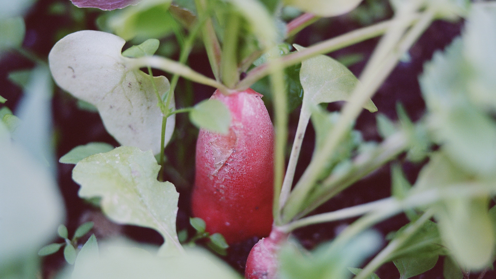
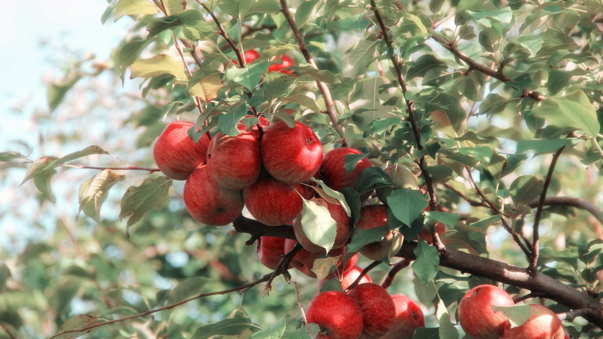
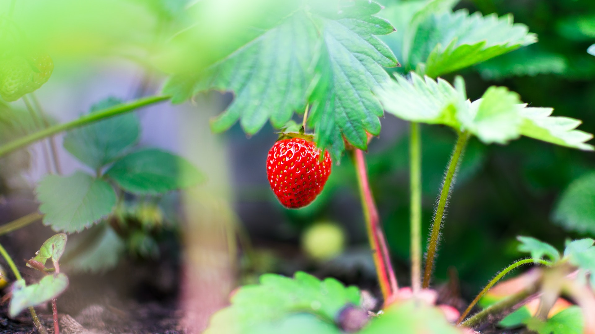
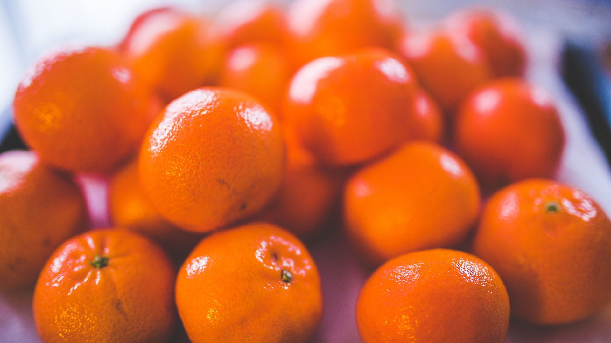

sobre nosotros
-

objetivo general
Desarrollar e implementar una huerta automatizada, por medio de una aplicación móvil que permita el monitoreo y cuidado remoto de una planta de fresa en un primer momento, para en un futuro llevarla a una mayor variedad de frutas y verduras.
-

Objetivos Específicos
Desarrollar un prototipo amigable con el medio ambiente, que utilice materiales reciclados, con tecnologías sustentables para minimizar el impacto negativo al medio ambiente.
-

Nuestro proyecto está enfocado principalmente en las personas que consumen frutas y verduras, quienes se ven afectados de gran manera al consumir alimentos orgánicos en mal estado, gracias a su mal almacenamiento o uso excesivo de productos químicos beneficiando no solo al consumidor, si no los suelos de Colombia, quienes se ven afectos por la explotación de nutrientes debido a la industrialización de las frutas y verduras.
-

Nuestro proyecto está enfocado principalmente en las personas que consumen frutas y verduras, quienes se ven afectados de gran manera al consumir alimentos orgánicos en mal estado, gracias a su mal almacenamiento o uso excesivo de productos químicos beneficiando no solo al consumidor